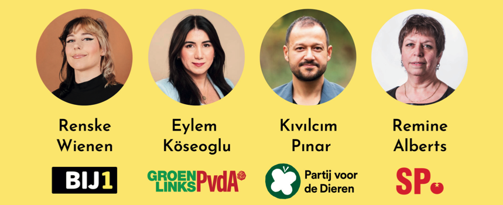

ALLES MOET BETER
VERKIEZINGSDEBAT 2023
woensdag 15 november 2023
19:30–21:00 uur (inloop 19:30 uur)
Café Het Pand, Zuiddijk 7, Zaandam

Binnenkort zijn de Tweede-Kamerverkiezingen. Café Het Pand organiseert een debat met vier verkiezingskandidaten over maatschappelijke thema’s zoals:
WERK EN ECONOMIE
DE ROL VAN DE GEMEENTE
RECHTVAARDIG KLIMAATBELEID
RACISME EN KOLONIALISME
GELIJKHEID VOOR LHBTQIA+ MENSEN
Moderator: Natasja Groothuismink (ROSA)
Na afloop is er de mogelijkheid het gesprek gezellig met elkaar voort te zetten.
Toegang is gratis.